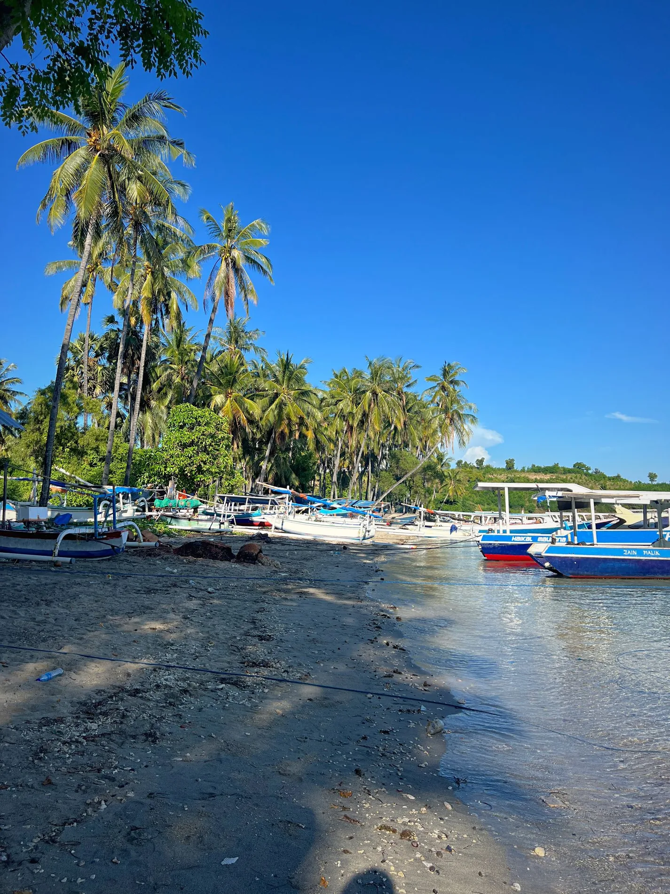
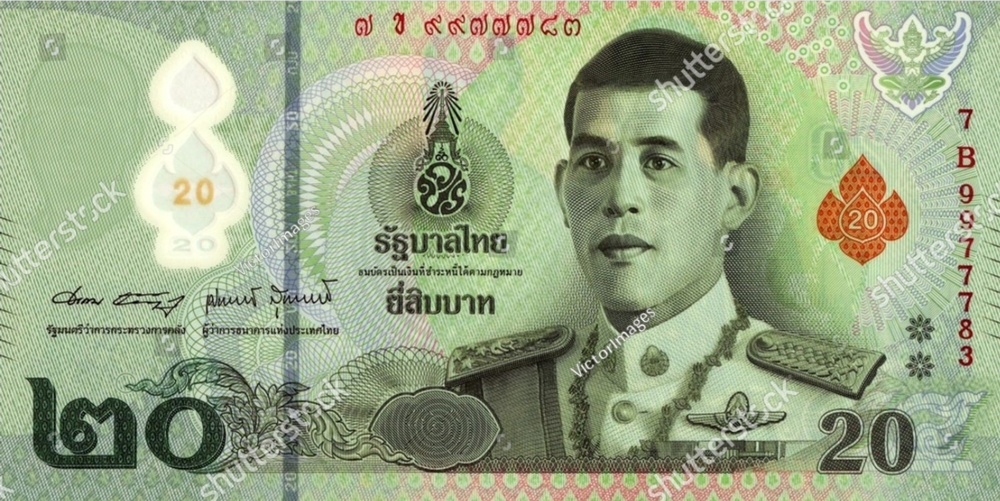

Odlet · 6.–7. 8. 2027
6. 8. 19:15 Praha (PRG)
TK1770 · přílet Istanbul 22:55 · přestup 3 h
TK68 · odlet Istanbul 7. 8. 01:55
7. 8. 15:25 Bangkok Suvarnabhumi (BKK)

Bangkok · Bali · Lombok
6.—25. srpna 2027 · Společně na druhý konec světa
Orientační rozpočet varianty B: 46 242 Kč/os. při pohodovém stravování a dvou osobách na pokoj. Živý kalkulátor níže zohledňuje změny výběru a kurzů.
Poslední úplné ověření: 27. 11. 2026, 03:00 SEČ. Aktualizace webu denně v 07:00.
Turkish 21 369 Kč + Thai Lion Air 1 820 Kč + AirAsia 1 796 Kč = 24 985 Kč/os.
Odhad celé dovolené při zachování původních ostatních nákladů: 44 319 Kč/os. Varianta A: 53 365 Kč/os. Rozdíl 9 046 Kč/os.
Turkish Airlines v obou variantách · úsporné hotely · pohodové stravování · dvě osoby na pokoj a skútr.
Z futuristického Bangkoku k balijským chrámům a rýžovým terasám. Přes zelené vnitrozemí až na pláže Lomboku. Tady začíná naše společné dobrodružství.
„Města, chrámy, sopky a oceán. Různé světy, stejná vášeň pro cestování.“
 01 / MĚSTO CHRÁMŮBangkokChrámy, řeka a chutě Thajska.
02 / OSTROV BOHŮBaliChrámy, rýžová pole a ostrovní život.
01 / MĚSTO CHRÁMŮBangkokChrámy, řeka a chutě Thajska.
02 / OSTROV BOHŮBaliChrámy, rýžová pole a ostrovní život.

03 / OSTROVNÍ KLIDLombokMoře, příroda a čas zpomalit.Fotografie destinací jsou ilustrační. Konkrétní program, hotely a ceny najdeš v jednotlivých kapitolách níže.
6. 8. 19:15 Praha (PRG)
TK1770 · přílet Istanbul 22:55 · přestup 3 h
TK68 · odlet Istanbul 7. 8. 01:55
7. 8. 15:25 Bangkok Suvarnabhumi (BKK)
24. 8. 23:10 Kuala Lumpur (KUL) → Istanbul → 25. 8. 08:35 Praha (PRG)
Společná rezervace Turkish: 21 369 Kč/os.
Časy jsou místní a vycházejí ze stávajícího itineráře; před nákupem budou ověřeny.
Co je potřeba vyřídit předem: víza a portály, zdraví a SOS kontakty, eSIM, dopravní aplikace, sdílení polohy a balení.
Bezplatná příjezdová deklarace. Před cestou ověř platné podmínky pro rok 2027.
Turistické vízum B1 (500 000 IDR / cca 605 Kč).
Poplatek 150 000 IDR (cca 180 Kč) na ochranu přírody.
Bezplatný celní formulář (vyplnit 2 dny před příletem na Bali).
Nezbytná digitální výbava pro pohodlný pohyb po Asii bez starostí a předražených poplatků.
Naprosto nejdůležitější aplikace pro Asii. Slouží k objednávání aut s předem danou fixní cenou.
Asijská obdoba Grabu, skvělá jako záloha a pro bleskové propletení kolon na skútru.
Mapy celé Asie, které fungují na 100 % i tehdy, když nemáš data ani signál.
Abychom se na letištích, v chaotických uličkách Bangkoku nebo na skútrech na Bali a Lomboku nikdy neztratili.
🤗 Kdo se nebude chtít připojit, samozřejmě nemusí, je to zcela dobrovolné! 😊
📲 Před odletem (ideálně den předem) si zájemci nainstalují do telefonu aplikaci Life360. Já (Radek) založím naši společnou cestovní skupinu a pošlu vám sem nebo přes WhatsApp pozvánkový odkaz.
Díky tomu se budeme všichni vzájemně vidět na jedné mapě. Kdyby se kdokoli z nás při toulkách městem nebo na plážích zpozdil, zapomněl odbočit na skútru nebo se nedej bože ztratil, bleskově ho podle GPS polohy v aplikaci najdeme. 🗺️✨
🔒 Zásada soukromí: Aplikaci používáme čistě po dobu dovolené. Jakmile se vrátíme domů do ČR, jednoduše v nastavení opustíte skupinu (nebo aplikaci odinstalujete) a sdílení polohy se tím nadobro zruší.

Kompletní seznam vybavení s průběžným sčítáním gramáže pro let do SE Asie
Bangkok → Bali (Uluwatu, Ubud) → Lombok → zpět na Bali → tranzit v Kuala Lumpur. Etapy (kruhy) a přesuny (čárkované) jsou v pořadí, v jakém je zažijete.
Na cestu vyrážíme ze dvou míst – z Liberce a z Hodkovic nad Mohelkou. Není nutné, aby se všichni nejprve scházeli v Liberci. Jednotlivé posádky se domluví na odjezdu ze svého místa tak, abychom se všichni potkali na letišti Václava Havla v Praze v 16:15 (3 hodiny před odletem · Terminál 1 (mimo Schengen)). Orientační čas odjezdu pro skupinu z Liberce je 13:45; odjezd z Hodkovic se stanoví samostatně podle zvolené trasy a dopravní situace.
Doporučujeme společnou dopravu osobními auty a rozdělení účastníků do posádek podle místa bydliště. Hlavní výhoda se ukáže po návratu: po dlouhém letu budeme pravděpodobně unavení a další cesta autobusy, přestupy a čekání na spoje do Liberce či Hodkovic by byla zbytečně náročná. Auty se dostaneme pohodlněji přímo domů, bez přenášení zavazadel mezi spoji. Před cestou si domluvíme řidiče, počet aut i dlouhodobé parkování u letiště; po příletu musí řídit ten, kdo je dostatečně odpočatý. Pokud by nikdo nebyl způsobilý k bezpečné jízdě, zvolíme odpočinek nebo odvoz.
📍 Časy odjezdu jsou orientační. Konkrétní trasy, posádky a parkování doladíme před odletem.TK1770: Praha 19:15 → Istanbul 22:55 (6. 8.). Přestup 3 h. TK68: Istanbul 01:55 → Bangkok Suvarnabhumi (BKK) 15:25 (7. 8.). Celkem 15 h 10 min.
Cena v THB je pevná, přepočet na Kč závisí na kurzu při platbě.


7. 8. po příletu BKK: Airport Rail Link nebo taxi, ubytování, večer Chinatown a Yaowarat.
8. 8. dopoledne Královský palác a Wat Phra Kaew, poté Wat Pho a přívoz k Wat Arun. Večer nábřeží nebo trh.
9. 8. odjezd na DMK s rezervou, let v 11:55.
Měna THB, čas UTC+7, v srpnu období dešťů. Do chrámů zakrytá ramena a kolena. Vstupní podmínky ověřit před cestou, včetně TDAC.
7. 8. přílet, ubytování a večerní procházka.
8. 8. Královský palác, Wat Pho, Wat Arun a Chinatown.
9. 8. ranní přesun na Don Mueang.
Ceny za osobu z 27. 11. 2026, poslední dostupná ověření 03:00–04:00. Výchozí rozpočet: Thai Lion Air.
11:55–17:15 · 1 820 Kč/os.
Všechny letenky dohromady: 25 002 Kč/os.09:05–16:35 · 4 667 Kč/os.
Všechny letenky dohromady: 27 849 Kč/os.10:55–18:40 · 4 635 Kč/os.
Všechny letenky dohromady: 27 817 Kč/os.10:55–19:15 · 4 370 Kč/os.
Všechny letenky dohromady: 27 552 Kč/os.16:00–00:05 (+1 den) · 3 530 Kč/os.
Všechny letenky dohromady: 26 712 Kč/os.Pondělí 9. 8. 2027 · autobus A2 bez přestupu · 8 osob
Odlet 11:55, cílový příjezd na mezinárodní Terminál 1 nejpozději 08:55. Odchod z hotelu v 06:45. Domluvit předem ranní check-out a vrácení klíčů.
Zabalit, zkontrolovat pasy, odhlásit se z hotelu.
Odchod z Baanfahsai pěšky směrem k Victory Monument, zastávka A2 na straně Din Daeng; rezerva 15–20 min.
Nástup na A2 směr Don Mueang Airport. Plánované okno, nikoli potvrzený spoj.
Předpokládaný příjezd po 45–60 min jízdy; při kolonách může trvat déle.
Nejzazší plánovaný příchod do Terminálu 1, mezinárodní odlety.
Orientační nástup podle ilustrační vstupenky; ověřit skutečný čas.
Odlet Thai Lion Air do Denpasaru.
Přílet Bali (místní čas).
Hotel → Victory Monument (Din Daeng) → přímý letištní autobus A2 → DMK, Terminál 1. Jízdenka přibližně 30 THB/os., celkem 240 THB za osm osob; koupit v autobuse, připravit drobné. Podle současných údajů interval přibližně 15–30 minut. Jízdní řád a přesnou nástupní zastávku ověřit před cestou.
Pokud do 07:35 nenastoupíme nebo bude výrazné zpoždění, objednat ihned dvě dostatečně velká auta Grab nebo taxi pro 4 osoby s batohy v každém, přímo na mezinárodní Terminál 1. Aktuální cenu a dobu jízdy ověřit v aplikaci. Časy jsou plánovací odhady podle informací v listopadu 2026, nikoli garantovaný jízdní řád na srpen 2027.
Na jihu Bali míříme k vápencovým útesům Uluwatu. Pod nimi leží pláže, nad nimi chrám a večerní představení Kecak.
Cena pronájmu na 7 dní + pojištění motorky (bez eSIM a IDP)
Pokud si motorky půjčíme zde, přivezou nám je přímo na letiště a vracet je budeme v přístavu Sanur. Tímto způsobem ušetříme spoustu času, cestu na letiště i následné drahé taxi do přístavu Sanur. Držák na telefon a sanitované helmy jsou zcela zdarma.
Vápencové útesy nad Indickým oceánem, starověký chrám Uluwatu s opičkami a tancem Kecak a slavné pláže Padang Padang a Bingin.
Tropická vila u Uluwatu s terasou, výhledem na zeleň a bazén a snídaní pro pohodový začátek dne.
Podklady z potvrzení Booking.com. Ceny v Kč jsou orientační; storno lhůty platí podle místního času ubytování.
Odpočinek v Uluwatu: pokoje Deluxe s vlastní vířivkou a balkonem, ideální po výletech k útesům.
Podklady z potvrzení Booking.com. Ceny v Kč jsou orientační; storno lhůty platí podle místního času ubytování.
Intenzivní poznávací itinerář (1x večer + 1x celý den): Útesy, jeskyně, skalní kaňony, monumentální park GWK a chrám Uluwatu.
Po ubytování v Uluwatu Jungle Villa vyrážíme rovnou na útes za prvním nekomerčním západem slunce.
Nádherná přírodní vyhlídka na otevřené travnaté ploše přímo nad kolmými útesy spadajícími do oceánu. Výborné místo bez davů.
Intenzivní celodenní program od skalní jeskyně až po večerní ohňový tanec Kecak.
Sestup přes úzkou skalní rozsedlinu do impozantní jeskyně pod útesem s přístupem na písčité pobřeží při odlivu.
Ikonický fotospot. Dramatická skalní stěna kolmo padající do oceánu s úchvatným panoramatickým výhledem.
Unikátní průjezd po asfaltce zaříznuté přímo mezi dvěma vysokými vápencovými skalami dolů k pobřeží.
Monumentální park se 120m vysokou sochou boha Višnua na Garudovi tyčící se nad skalním amfiteátrem.
Chrám na 70m útesu a amfiteátr s tradičním ohňovým tancem Kecak při západu slunce nad oceánem.
Z pobřeží zamíříme mezi rýžové terasy. Z Ubudu budeme vyrážet k vodopádům, pramenům a do Opičího pralesa.
Smaragdově zelené rýžové terasy Tegalalang, vodopády v džungli (Kanto Lampo, Tibumana), posvátné prameny Tirta Empul a Opičí prales.
Klidnější ubytování v Ubudu se zahradou, bazénovým výhledem a prostornými postelemi.
Podklady z potvrzení Booking.com. Ceny v Kč jsou orientační; storno lhůty platí podle místního času ubytování.
Zelená atmosféra Ubudu a vlastní terasa jako příjemné zázemí po objevování rýžových teras.
Podklady z potvrzení Booking.com. Ceny v Kč jsou orientační; storno lhůty platí podle místního času ubytování.
Soukromá apartmá orientovaná k bazénu, s terasou, posezením a pohodlím pro několikadenní pobyt.
Podklady z potvrzení Booking.com. Ceny v Kč jsou orientační; storno lhůty platí podle místního času ubytování.
Pobyt na 4 noci v Bije Suite Villa Ubud: Rýžové terasy, vodopády, skleněný most, opičí prales, posvátné prameny a kávové plantáže.
Příjezd kolem poledne, ubytování ve vile, odpolední procházka posvátným lesem plným opic a večerní centrum.
Přírodní pralesní rezervace s historickými chrámy a stovkami volně žijících makaků přímo v centru Ubudu.
Tradiční architektura paláce Puri Saren Ubud, tržnice s řemeslnými výrobky a večerní atmosféra města.
Výlet za vodopády v džungli, posvátnými prameny a po proskleném mostě nad údolím řeky Petanu. Zastávky přizpůsobíme času a dopravě.
Ikonický stupňovitý vodopád v kaňonu. Voda stéká přímo po členitých skalách, kde se lze postavit přímo pod vodopád.
Starobylý balijský hinduistický chrám s posvátnými prameny, kde probíhá tradiční očistná koupel Melukat.
Procházka po proskleném mostě nad údolím řeky Petanu u Blangsinga/Kemenuh. Panoramatické výhledy do tropické zeleně a výjimečné místo pro fotografie. Zastávka se hodí při výletu za vodopády v okolí Ubudu.
📍 Lokalita: Kemenuh, Sukawati, Gianyar · 🎟️ Vstupné: podle aktuálního ceníku na místě; zatím není započteno do rozpočtu.
Ranní procházka smaragdovými terasami, degustace kávy Luwak nad kaňonem a odpolední pohodový relax u bazénu ve vile.
Světoznámé terasovité rýžové půdorysy v údolí s kaskádovým zavlažovacím systémem Subak.
Tradiční zpracování cibetkové kávy (Kopi Luwak), degustace vzorků zdarma a vyhlídková terasa nad kaňonem.
Ikonické vyhlídkové místo s kaskádami rýžových polí, kavárnou a odpočinkovými zónami v údolí.
Slavné obří houpačky (Bali Swings), skleněné terasy a fotogenické instalace přímo nad džunglí.
🚢 B (Doporučeno – Rychloloď Starfish): Odjezd ve 13:00 z přístavu Sanur ➔ příjezd v 15:00 do přístavu Bangsal na Lomboku (2 hodiny plavby na moři). Cena: jen 1 343 Kč / osoba (2 686 Kč / pár obousměrně).
✈️ A (Přelet TransNusa): Odlet ve 12:40 DPS ➔ přílet ve 13:20 LOP. Cena: 2 240 Kč / osoba (4 480 Kč / pár).
Na Lomboku se cesta stáčí k moři. Na výletech lodí kolem ostrůvků Gili nás čeká šnorchlování nad korálovými útesy.
Korálové útesy, mořské želvy a výlety lodičkou po ostrůvcích Gili s průzračnou vodou.
Doporučení na základě recenzí, přímé kontakty a taktika hromadné slevy
Níže najdete interaktivní mapu a katalog ověřených půjčoven v okruhu do 1 km od přístavu Bangsal. Barevně zvýrazněné karty představují naše top doporučení. Kliknutím na libovolnou kartu otevřete její přesnou polohu na Google mapách.
Dvě soukromé vily se dvěma ložnicemi a vlastním bazénem — prostor na odpočinek u pobřeží Sekotongu.
Podklady z potvrzení Booking.com. Ceny v Kč jsou orientační; storno lhůty platí podle místního času ubytování.
Poklidný Tanjung se zahradním výhledem a terasou, dobrá základna pro severní Lombok.
Podklady z potvrzení Booking.com. Ceny v Kč jsou orientační; storno lhůty platí podle místního času ubytování.
Pobyt na 4 noci v Mina Tanjung Hotel: Privátní plavba se skleněným dnem kolem Gili, vodopády pod sopkou Rinjani, vyhlídky & mořský chrám.
Příjezd lodí do přístavu Bangsal/Teluk Nare, krátký přejezd do hotelu Mina Tanjung, ubytování a odpolední relax u bazénu a západ slunce z pláže rezortu.
Soukromá loď se skleněným dnem (cca 800 000 – 1 200 000 IDR / 960 – 1 440 Kč za skupinu): podvodní sochy NEST, šnorchlování s želvami, oběd na Gili Trawangan a relax na Gili Air.
Slavné kruhové podvodní sochy od Jasona deCaires Taylora a blízké útesy s volně plávajícími mořskými želvami.
Celodenní výlet na sever k úpatí sopky Rinjani: mohutný vodopád Sendang Gile, trek džunglí k Tiu Kelep a tradiční architektura vesnice Senaru.
První velkolepý dvoustupňový vodopád stékající z masivu sopky Rinjani obklopený hustou tropickou vegetací.
Autentická starobylá sasacká vesnice s tradičními bambusovými obydlími, slaměnými střechami a zachovalým způsobem života.
Průsmyk vnitrozemím s divokými opicemi, ikonická panoramatická vyhlídka na útesu s výhledem na ostrovy Gili a západ slunce u mořského chrámu Batu Bolong.
Scénická horská silnice obklopená džunglí, kde podél cesty odpočívají a pobíhají skupiny volně žijících opic.
Ikonický skalní ostroh s panoramou pobřeží, tyrkysových zátok a všech tří ostrovů Gili seřazených na horizontu.
Mystický mořský hinduistický chrám stojící na černé skalní zátoce s přirozeným skalním oknem omývaným vlnami.
Ranní check-out z Mina Tanjung Hotelu a scénický přejezd autem směrem na jihoindonéské surfové pláže a ikonické zátoky v okolí Kuta Lombok.
Na jihu se střídají zátoky Tanjung Aan a Selong Belanak. Na večer si necháme výhled z Bukit Merese.
Tyrkysové zátoky Tanjung Aan, panoramatický útes Bukit Merese se západem slunce, surfařská zátoka Selong Belanak a divoké pláže.
Stylové pokoje s terasou pro pobyt v oblasti Kuta Lombok, s klimatizací a pohodlným zázemím.
Podklady z potvrzení Booking.com. Ceny v Kč jsou orientační; storno lhůty platí podle místního času ubytování.
Samostatné vily v zeleném prostředí Are Guling s výhledy na kopce i bazén.
Podklady z potvrzení Booking.com. Ceny v Kč jsou orientační; storno lhůty platí podle místního času ubytování.
Pobyt na 4 noci v TheLocal AreGuling HOMESTAY: Okruh Moto GP, podzemní jeskyně Goa Bangkang, kultura kmenu Sasak, Růžová pláž & vyhlášené útesy.
Scénický přejezd ze severu napříč ostrovem na jih do ubytování TheLocal AreGuling HOMESTAY, odpolední relax v zátoce Are Guling a podvečerní západ slunce z útesu Bukit Merese.
Ikonický travnatý útes nad oceánem s nejznámějším západem slunce na jihu Lomboku a panoramatickým výhledem.
Návštěva nového okruhu Moto GP v Kutě, mystické podzemní jeskyně s netopýry a odpolední výlet na východ k Růžové pláži a útesy Tanjung Ringgit.
Moderní mezinárodní závodní okruh Pertamina Mandalika Circuit situovaný přímo u mořského pobřeží v Kutě.
Mystická podzemní jeskyně se stovkami netopýrů, kde stropním otvorem procházejí dramatické světelné kužely.
Unikátní pláž na východním cípu Lomboku s jemným růžovým pískem tvořeným drcenými červenými korály.
Majestátní kolmé skalní útesy spadající do tyrkysového oceánu s výhledem na ostrov Sumbawa.
Poznání původní kultury kmenu Sasak ve vesnici Sade, oběd u tyrkysové zátoky Tanjung Aan a odpolední divoké útesy Mawi.
Autentická vesnice původních obyvatel Lomboku s tradičními obydlími ze slámy, bambusu a jílu.
Široká tyrkysová zátoka s ikonickým pískem ve tvaru kuliček peppercorn, ideální ke koupání a obědu v warungách.
Dramatické skalní útvary na západním pobřeží se silným vlnobitím a fotogenickou sopečnou kulisou.
Plně odpočinkový den bez plánování: pohoda u bazénu v TheLocal AreGuling HOMESTAY, masáže v Kuta Lombok, kavárny nebo libovolné toulání v okolí.
Ranní check-out v homestayi, přejezd autem napříč Lombokem do přístavu na severu (Bangsal / Teluk Nare) a odplutí rychlolodí zpět na Bali.
Ve 13:30 odplutí lodí Wahana Virendra zpět na Bali (příjezd do přístavu Sanur v 17:00). Krátký transfer do hotelu u letiště v Denpasaru.

Po návratu z Lomboku strávíme poslední noc na Bali blízko letiště. Ráno nás čeká let do Bangkoku.
Závěrečné rozloučení s Asií. Ubytujeme se těsně u letiště v Denpasaru, abychom se před ranním odletem zcela vyhnuli dopravním zácpám.
Pohodlné zakončení cesty v Kutě s klimatizovanými pokoji a snídaní před odletem.
Podklady z potvrzení Booking.com. Ceny v Kč jsou orientační; storno lhůty platí podle místního času ubytování.
Jednoduché a cenově dostupné ubytování v Kutě na poslední noc, s terasou a snídaní.
Podklady z potvrzení Booking.com. Ceny v Kč jsou orientační; storno lhůty platí podle místního času ubytování.
Příjemná zahradní atmosféra na poslední noc v Kutě, s balkonem a výhledem k bazénu.
Podklady z potvrzení Booking.com. Ceny v Kč jsou orientační; storno lhůty platí podle místního času ubytování.
1 noc v Bakung Beach Resort (Kuta): Západ slunce & mořské plody v Jimbaranu, balijská masáž a odlet zpět do ČR.

DPS 15:25 → KUL 18:30. Přímý let 3 h 5 min. Rezerva 4 h 40 min na samostatné letenky na stejném letišti; ověřit terminály a vstupní podmínky Malajsie.
24. 8. 23:10 Kuala Lumpur → Istanbul → Praha 25. 8. 08:35. Společná rezervace s odletem z Prahy: 21 369 Kč/os. Časy jednotlivých úseků zatím nepotvrzeny.
Přistáváme v Praze v 18:20. Všichni cestujeme pouze s kabinovým batohem do 7 kg, bez odbavených zavazadel, takže po výstupu z letadla a příslušných kontrolách nemusíme čekat u zavazadlových pásů. Z letiště vyrazíme rovnou k předem zaparkovaným autům a jednotlivé posádky pojedou přímo domů do Liberce nebo Hodkovic nad Mohelkou, bez přestupů v centru Prahy. Pro orientaci počítáme s hodinou na kontroly a cestu k autům a 2,5 hodinami jízdy do Liberce, tedy s příjezdem kolem 21:50; skutečný čas závisí na výstupu z letadla, kontrolách, cestě k autům a dopravě. Po dlouhém letu musí řídit pouze odpočatý řidič; v případě únavy raději odpočinek nebo zajištěný odvoz.
📍 Orientační čas příjezdu, nikoli závazný plán. Domluvíme posádky, parkování a bezpečný odvoz po letu.Postupně zvolíš lety a hotely v itineráři, tady nastavíš jídlo, aktivity a hotovost. Na konci tě čeká kompletní finanční dashboard se srovnáním s CK SEN.
Vyber styl stravování pro celou cestu. Cena se okamžitě projeví v hlavním rozpočtu i v plánu hotovosti.
Volba se přepočítá v celé stránce: v rozpisu nákladů (součet vč. jídla) i v Plánu hotovosti. Snídaně jsou v ceně hotelů, proto se počítá jen oběd, večeře, pití a svačiny.
Procházej zážitky po destinacích, vyber jen to, co opravdu chceš navštívit. Ceny i hotovost se průběžně přepočítávají.
Částky jsou na 1 osobu. Povinné položky (jízdné v Bangkoku, poslední hotel) jsou zaškrtnuté vždy a nejdou vypnout. Všechno ostatní je ve výchozím stavu odškrtnuté, zaškrtni si, co chceš navštívit. Položky označené 💡 jsou tipy z okolí navštívených míst. Ceny jsou z veřejných přehledů z roku 2026, označení „odhad“ znamená, že cena je jen orientační. Do srpna 2027 se mohou posunout.
V této kategorii nemáš nic vybráno. Vypni filtr „Ukázat jen vybrané“.
Kolik připravit doma, kolik směnit až na Bali a které výdaje pokryje karta. Částky se mění podle tvého výběru.
Přehled hotovosti na jídlo, aktivity, kauce a poslední ubytování. Částky reagují na vybrané varianty a kurzy.
Každý si vezme nejméně 650 USD v hotovosti (6 × 100 USD + 1 × 50 USD); plánované thajské bahty směníme až v Thajsku z těchto dolarů. Pro dvojici 1 300 USD, pro osm osob 5 200 USD. Imigrační úředník může při vstupu do Thajska požadovat prokázání prostředků; plánujeme konzervativní hranici 20 000 THB na osobu. Při kurzu 32 THB/USD odpovídá 650 USD částce 20 800 THB. Nejde o povinnou útratu ani o oficiální limit v USD. Přebytečné dolary přivezeme domů. Před druhým vstupem 24. 8. znovu ověříme požadavek a zajistíme potřebnou hotovost, případně včas směníme peníze. Pravidla a kurz ověřit před cestou.

Jídlo se počítá podle zvolené úrovně (stejná volba jako v sekci Jídlo). Vstupné a aktivity zaškrtáváš v sekci Vstupné a aktivity.
Přepínač vlevo říká, jestli to zaplatíš hotově. Vratné kauce jsou v této hotovosti už zahrnuté, v celkové ceně dovolené zahrnuté nejsou. Při převzetí motorek je musíš mít u sebe. Po vrácení motorek a splnění podmínek půjčoven je dostaneš zpět a můžeš je využít jako rezervu na zbytek dovolené. Pokud je neutratíš, přivezeš si je zpátky domů.
Na letišti v Bali měň jen malou část. Letištní směnárny mají horší kurz než licencované směnárny ve městě. Hlavní výměnu udělej v Uluwatu nebo Ubudu a zbytek před odjezdem na Lombok.
Porovnáno s veřejnými cestovatelskými průvodci a cenovými přehledy z roku 2026. Verdikty se mění podle posuvníků výše.
Imigrační úředník může požadovat prokázání finančních prostředků. Pro turistický bezvízový vstup počítáme s vyšším limitem podle thajských ambasád: 20 000 THB na osobu nebo 40 000 THB na rodinu. Při ilustrativním kurzu 32 THB/USD jde o 625 USD na osobu; doporučená rezerva 700 USD, podle aktuálního kurzu. Pro osm osob orientačně 5 000 USD při uvedeném kurzu.
Nemusíme mít bahty, odpovídající hotovost v USD je přípustná. Bangkok je na začátku cesty, takže dolary na dovolenou mohou tento požadavek pokrýt, pokud každý disponuje potřebnou částkou. Nespoléhat pouze na kartu. Před druhým vstupem 24. 8. z Bali znovu zkontrolovat zbývající hotovost. Nejde o poplatek ani další výdaj, částku nepřičítáme k rozpočtu.
Oficiální zdroje uvádějí u některých bezvízových případů i nižší limit 10 000 THB; pro jistotu plánujeme vyšší. Pravidla ověřit před cestou v srpnu 2027.
Podmínky bezvízového vstupu Oficiální informace o kontrole hotovostiNejdřív vyber lety a hotely v itineráři, potom jídlo, výlety a hotovost. Tady uvidíš výslednou cenu, všechny položky, rozdíly variant a nakonec srovnání s CK SEN. Ceny reagují na každou změnu výběru.
Rozdělení výdajů na 1 osobu při sdíleném pokoji
Přehled ubytování a nákladů.
Hotové kombinace A, B, C nebo individuální výběr po etapách. Ovládání a ceny zůstávají propojené s původním konfigurátorem.
📊 Klikni na libovolnou kombinaci hotelů. Letovou variantu vybereš nahoře ve složce „Výběr letenek“, celá stránka se pak sama přepočítá (lety, hotely i ceny).
Cena dovolené nezahrnuje vratné kauce za motorky. Navíc potřebuješ 47,50 USD + přibližně 250 000 Rp na osobu při sdílení motorky ve dvou. Za celou motorku je to 95 USD + přibližně 500 000 Rp.
Po vrácení motorek a splnění podmínek půjčoven dostaneš kauce zpět. Vrácené peníze můžeš využít jako rezervu na zbytek dovolené. Pokud je neutratíš, přivezeš si je zpátky domů.
V přehledu hotovosti už jsou kauce zahrnuté. K uvedené hotovosti je tedy znovu nepřičítej.
Když přepneš variantu hotelu (např. na Lomboku ze Sekotongu na Tanjung), kruhy na mapě se automaticky přesunou na přesné souřadnice vybraného ubytování!
Přehled letů, přesunů a navazujících noclehů podle aktuálně vybraných variant. Bez drobných políček Ganttova diagramu.
Přehled letenek, hotelů, jídla, aktivit a výsledné ceny bez zbytečné omáčky.
Výsledný rozpočet na osobu, pár i sólo cestovatele, rozdělení částek a detail všech kategorií. Přepočet používá tvoje skutečné volby.
Graf je složen výhradně z vypočtených položek ve zdrojové tabulce. Částky jsou orientační podle zvolených variant.
Každá položka má svůj původní výpočet. Rozbal kategorii a uvidíš jednotlivé částky.
Následující část zachovává původní orientační srovnání. Ceny CK SEN nejsou živě ověřovány a rozsah zahrnutých služeb se může lišit.
Přímé srovnání naší expedice s komerčním zájezdem v obou délkách trvání.
Praktické fráze v interaktivních překlápěcích kartách s výslovností.
Poslední průchod všemi body před schůzkou.
Stáhne jeden soubor .ics se všemi 11 termíny a připomínkami. Otevři ho v Kalendáři, Google Kalendáři nebo Outlooku a potvrď import.
Všechno na jednom místě a nic dvakrát: nahoře úkoly s termínem (zaškrtni hotové, termíny si přidáš do kalendáře), dole rozhodnutí a pravidla, která si odsouhlasíme na schůzce.
Každý si vezme nejméně 650 USD v hotovosti (6 × 100 USD + 1 × 50 USD); plánované thajské bahty směníme až v Thajsku z těchto dolarů. Pro dvojici 1 300 USD, pro osm osob 5 200 USD. Imigrační úředník může při vstupu do Thajska požadovat prokázání prostředků; plánujeme konzervativní hranici 20 000 THB na osobu. Při kurzu 32 THB/USD odpovídá 650 USD částce 20 800 THB. Nejde o povinnou útratu ani o oficiální limit v USD. Přebytečné dolary přivezeme domů. Před druhým vstupem 24. 8. znovu ověříme požadavek a zajistíme potřebnou hotovost, případně včas směníme peníze. Pravidla a kurz ověřit před cestou.
Zatím nic nebylo probráno.
12 fotografií ze Bangkoku, Bali a Lomboku · losuje se z 30 míst